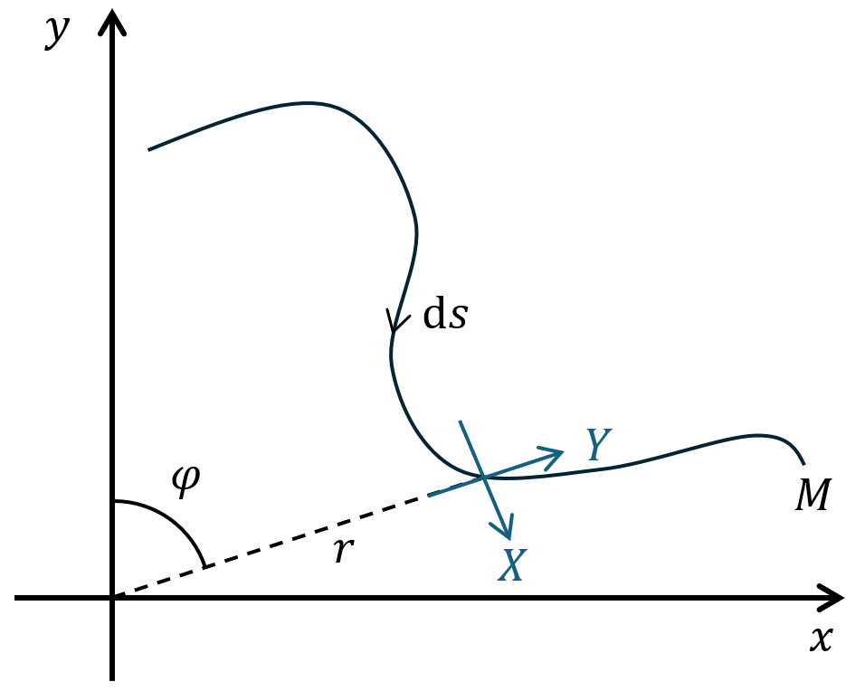

Have you ever wondered what would happen if the Earth was flat, but gravity still obeyed Newton's law?
In this report, I compute the geometry of a gravitating body, as perceived by an infinitesimal observer, with an infinitely-constrained field of view.
General gravitational field strength
We do not investigate the strength of gravity experienced, but merely the goemetry of the surface, as the former is solved in the standard way.
Beginning with Gauss' law for gravity:
\[
\nabla \cdot \mathbf{g}(\mathbf{r})=-4 \pi G \rho(\mathbf{r}),
\]
where \( \mathbf{r} \) is position, \( \mathbf{g} \) is the gravitational field strength, \( G \) is Newton's constant and \( \rho \) is mass density.
We have that \( \rho(\mathbf{r}) \) is defined everywhere, but is only non-zero in the simply connected set \( \mathcal{V} \in \mathbb{R}^3 \).
We also define the boundary of \( \mathcal{V} \) as \( \partial \mathcal{V} \).
Given that gravity is a conservative force, we can write that \( \mathbf{g}(\mathbf{r})\equiv -\nabla\phi(\mathbf{r}) \) for some scalar potential \( \phi \).
This yields Poisson's equation (the inhomogeneous Laplace equation) that:
\[
\nabla^2 \phi(\mathbf{r}) =4 \pi G \rho(\mathbf{r}).
\]
This is solved with a simple Green's function approach, using the fact that \( G(\mathbf{r},\mathbf{r}')\equiv-\frac{1}{4 \pi | \mathbf{r}-\mathbf{r}' | } \)
satisfies \( \nabla^2G(\mathbf{r},\mathbf{r}')=\delta(\mathbf{r}-\mathbf{r}') \).
This means that the particular solution for \( \phi (\mathbf{r}) \) which satisfies the Poisson equation, and related \( \mathbf{g} \), are given by:
\[
\phi(\mathbf{r}) = -\int_{\mathcal{V}}{\text{d}^3 \mathbf{r'} \frac{G \rho(\mathbf{r}')}{| \mathbf{r}-\mathbf{r}' |}},
\]
\[
\mathbf{g} (\mathbf{r}) = -\int_{\mathcal{V}}{\text{d}^3 \mathbf{r'} \frac{G \rho(\mathbf{r}')}{| \mathbf{r}-\mathbf{r}' |^3} (\mathbf{r}-\mathbf{r}')}.
\]
As such, the strength and direction of the force on the observer is dependent on their position \( \mathbf{r} \).
An important clarification is that the direction of the force is not always towards the center of mass.
In fact, the point which the observer is pulled towards is dependent on their position, and is given by:
\[
\mathbf{r_c} (\mathbf{r}) = \left( \int_{\mathcal{V}}{\text{d}^3 \mathbf{r'} \frac{\rho(\mathbf{r}')}{| \mathbf{r}-\mathbf{r}' |^3}} \right)^{-1} \int_{\mathcal{V}}{\text{d}^3 \mathbf{r'} \frac{\rho(\mathbf{r}')}{| \mathbf{r}-\mathbf{r}' |^3} \mathbf{r}'}.
\]
However, for the coming analysis, we will assume that there exists a fixed and sufficiently dense part of the gravitating body, resulting in a point, towards which the observer is always pulled.
Defining the problem
Return to our gravitating body existing in \( \mathcal{V} \) whose boundary is \( \partial \mathcal{V} \). We set the single gravitating point to be at \( \mathbf{r}=0\).
Now imagine slicing this body with a plane that passes through the origin, such as to create a continuous one-dimensional manifold \( M \) embedded in \(\mathbb{R}^2 \),
defined by the points of intersection between the plane and \( \partial \mathcal{V} \). Our observer is free to roam along this line manifold.
It is important to clarify that the observer is infinitesimal, such that they can only exist on a single point on the manifold at once.
Furthermore, they have an infinitely-constrained field of view, such that they can only evaluate the slope of the manifold at the point they exist on.
The observer can feel the pull of gravity, and ascertain its direction. Furthermore, they believe the direction of gravity to be uniform,
regardless of their position, when in reality, it changes, pulling them towards one particular point.
This picture is described in the image on the left.
The manifold to traverse \(M\) is parameterised by functions \(x(t)\) and \(y(t)\) for some real parameter \(t\).
We can alternatively parameterise it in plane polar coordinates, defined by \(x=r\sin \varphi\) and \(y=r \cos \varphi\).
We now analyse what the observer sees. They have their own local coordinate system and are tasked with mapping \(M\) with their parameterisation \(X(t)\) and \(Y(t)\).
Believe the direction of gravity to be uniform along \(M\), their \(Y\) coordinate axis must always point radially from the origin.
Their \(X\) coordinate axis will point in the polar direction, as they see this as the direction along which they need not fight gravity.
At the point indicated with the diagram, they believe the surface to be very steep, as the direction of the tangent vector \(\text{d}s\) aligns quite closely with \(Y\).
Our goal is to plot the surface \(M\) on a graph whose fixed axes represent the coordinates \(X\) and \(Y\). This would be the map produced by our observer as they travser and plot the manifold.
Change of variables
It is natural to see immediately that \(Y=r\) always. We cannot immediately define \(X\), but only its differential. An infinitesimal change \(\text{d}X\) corresponds
to a displacement of \(\text{d}s\), but where \(Y=r\) is held constant, denoted \(\text{d}s|_r\).
Using the standard plane polar metric \(\text{d}s^2=\text{d}r^2+r^2\text{d}\varphi^2\), we find that:
\[
\text{d}X=\text{d}s|_r=r\text{d}\varphi=Y\text{d}\varphi.
\]
Using the chain rule, we find that \(\text{d}\varphi=\frac{\partial \varphi}{\partial x}\text{d}x+\frac{\partial \varphi}{\partial y}\text{d}y \). We now use the definition that \(\tan \varphi = \frac{x}{y}\) to evaluate these expressions.
Implicitly differentiating with respect to \(x\) and \(y\), and then using \(Y=r\), yields the expressions \(\frac{\partial \varphi}{\partial x}=\frac{y}{Y^2}\) and \(\frac{\partial \varphi}{\partial y}=-\frac{x}{Y^2}\).
Assembling the above leads us to \( \text{d}X= \frac{y}{Y}\text{d}x-\frac{x}{Y}\text{d}y\), or in terms of the parameter \(t\):
\[
\text{d}X=\frac{\text{d}t}{Y}(y\frac{\text{d} x}{\text{d} t}-x\frac{\text{d}y}{\text{d}t}).
\]
This leads to our final result for the parameterisation of \(M\) by the observer:
\[
X(t)=\int_{0}^{t}{\frac{\text{d}t'}{\sqrt{x^2(t')+y^2(t')}}\left(y\frac{\text{d} x}{\text{d} t'}-x\frac{\text{d}y}{\text{d}t'}\right)},
\]
\[
Y(t)=\sqrt{x^2(t)+y^2(t)}.
\]
An important observation for these solutions is that, by the nature of their construction, lengths in the coordinate systems are the same, or \(\text{d}s^2=\text{d}x^2+\text{d}y^2=\text{d}X^2+\text{d}Y^2\).
Examples and applications
A great way to sense-check our answer is to apply it to a case which we know, being a spherical planet-like manifold.
If we set \(x(t)=a\cos t\) and \(y(t) = a \sin t \), representative of a circle of radius \(a\), then one can check that these formulae produce:
\[
X(t)=-at, \quad Y(t)= a.
\]
This is the equation for a flat line of constant height \(Y=a\), which is how the Earth appears for us comparatively small humans.
The most interesting case is for \(x(t)=Ht\) and \(y(t)=H\), as this is the manifold for an Earth which is a circular disk of thickness \(2H\).
A simple integral shows that this yields:
\[
Y(X)=H \cosh \frac{X}{H}\equiv \frac{H}{2}\left(e^{X/H}+e^{-X/H}\right).
\]
This is the shape of a caternary curve. It is an even function that is stationary at \(X=0\), and approaches \(Y(X)\rightarrow \frac{H}{2}e^{X/H}\) as \(X\rightarrow \infty\).
The exponential growth is representative of the fact that the observer is always being pulled back to the centre of the disk, making the surface appear steeper the further you venture from the origin.
There is another interesting application for this mathematics, namely designing a road which is suitable for any shape of wheel. By suitable, I mean that a wheel of this kind would have its axis stay at the same height above the road as it rolls.
For example, a circular wheel, as in the first example above, yields a flat road. However, if a wheel was to be a square shape, then each straight edge of the wheel would yield a caternary curve for the road, as above.
This results in the optimal road being a chain of connected caternary curves.
A more realistic model
We assumed gravity to always pull towards a fixed point, which is unrealistic. In reality, the direction of gravity at each point is affected by the structure of the surface.
For a finite disk of uniform mass density, the afforementioned integrals are too complex to compute.
However, we can interpolate the trend between some (easy-to-evaluate limits). In the limit of small radius for the disk, beyond that radius, the derive caternary curve regime takes over.
However, were the disk to be infinitely large, then an infinitesimal "pillbox" argument from Gauss' law would indicate that the field strength always points normally into the disk.
This would be perceived as the surface always being flat.
Qualitatively inferring between these results, we deduce that near the edge and beyond from a large disk, the surface would appear to follow the caternary trend.
However, as one approaches the centre, this deforms to a flat surface faster than the caternary calculation predicts,
with the surface would appearing flatter at higher radii than as derived.